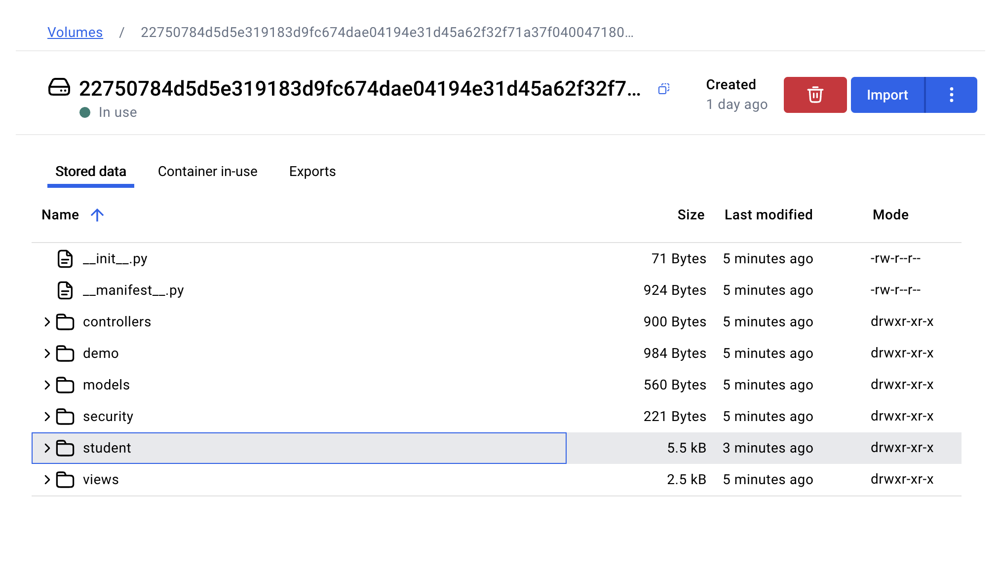
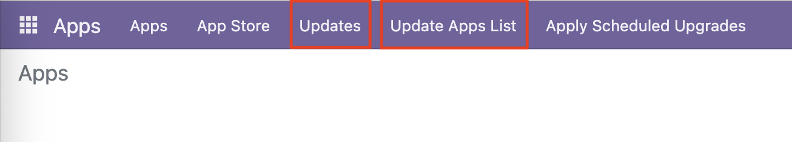
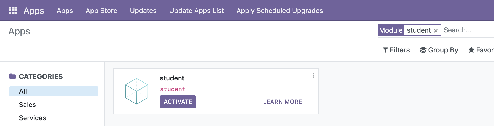

Creating (Scaffolding) an Add-on
Just like in numerous frameworks that involve databases, scaffolding refers to the process of making a "skeleton" or "structure". In fact, this does not only revolve databases alone but encompasses anything that involves the making of a readymade, more-or-less structure (just like a template or boilerplate code).
In Odoo, an addon can be scaffolded. This takes care of setting up all the files an add-on needs without the need of manually creating those files.
In a traditional setup of Odoo, the way to scaffold an add-on is:
odoo-bin scaffold <name> <path>
Where <name> is the name of the add-on and <path> is the path to where the add-on will be created.
In a Docker setup, the command is slightly different. The command to scaffold an add-on in a Docker setup is:
docker exec <container-name> odoo scaffold <name> /mnt/extra-addons
/usr/bin/odoo is analogous to odoo-bin above, which is nested under a command, docker exec which calls docker to execute whatever shell command is appended before it.
<name>still refers to the name of the add-on./mnt/extra-addonsis a fixed path where all of the extra or custom add-ons will be added. In Docker, this is a volume where it cooperates with the Odoo container alongside the second volume which handles the Postgre container (the container that is being demonstrated to delete in Odoo + Docker/Delete a Volume).
For example, to create a custom "student" add-on, the command would be:
docker exec odoo odoo scaffold student /mnt/extra-addons
Where the first odoo is the name of the Odoo container, the second odoo analogous to odoo-bin, and student is the name of our add-on.
Afterwards, you can find the volume where this file structure resembles the following in Docker Desktop under the Volumes view from the sidebar:

As shown, the model that we scaffolded, student is present in the root of this directory. You can further verify that this is inside /mnt/extra-addons by inspecting the file structure of your Odoo container.
Importing an Add-on to the Odoo Container
As per the official README in the Odoo DockerHub repository, the command to import an add-on to the Odoo container is:
docker run -v /path/to/addons:/mnt/extra-addons -p 8069:8069 --name odoo --link db:db -t odoo
Where /path/to/addons may be an individual folder of an add-on or a folder comprised of add-ons within. Furthermore, this command subsequently starts your Odoo container with the add-on(s) present in the /mnt/extra-addons directory.
An alternative to import an existing add-on to the Odoo container is by this command:
docker cp /path/to/addon <container-name>:/mnt/extra-addons
Where <container-name> is the name of your Odoo container, throughout this documentation being that the name is odoo.
For example, if I have an add-on named student from my Desktop in my local machine, I can import it to the Odoo container by:
docker cp /Users/User/Desktop/student odoo:/mnt/extra-addons
This verbose output should be present after running docker cp:
Successfully copied XX.XkB to odoo:/mnt/extra-addons
Verifying the Add-on is Present in Odoo
Back in the Dashboard in the upper-left of the navigation bar, do Update Apps List and Updates. 
Afterwards, you can search for the add-on that you have scaffolded in the search bar of the Apps page. Make sure the Apps filter is removed by pressing Backspace in the search bar, then search for the add-on. In this example, student:
